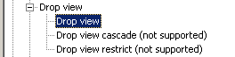

Use this command to remove a view from the database.
DROP VIEW [schema-name.]view-name [{CASCADE | RESTRICT}]
To see whether the cascaded or restrict syntax is supported, look it up in the ODBC tree under 'SQL Supported standard / Drop view'.

See also: CREATE VIEW